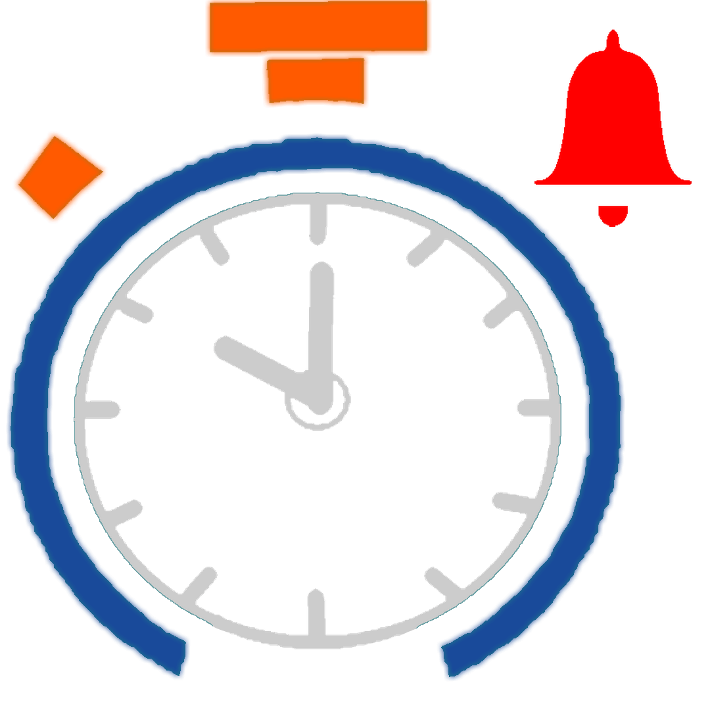

ESTA SEMANA EN PIXELIVE ¡HAGAMOS DE LA LECTURA UN CUENTO DE TODOS!
En Pixelive creemos que la mejor compañía es una buena lectura, por este motivo hemos querido crear una nueva saga de programas radiales donde estaremos recordando a escritoras y escritores que han dejado a través de sus escritos una huella en este mundo. Que mejor manera de empezar que con Mario Benedetti, con su gran táctica y estrategia, ¿A poco no la han dedicado? ¡Acompáñanos! Y hagamos juntos de esta vida un cuento digno de contar.
En Pixelive creemos que la mejor compañía es una buena lectura, por este motivo hemos querido crear una nueva saga de programas radiales donde estaremos recordando a escritoras y escritores que han dejado a través de sus escritos una huella en este mundo. Que mejor manera de empezar que con Mario Benedetti, con su gran táctica y estrategia, ¿A poco no la han dedicado? ¡Acompáñanos! Y hagamos juntos de esta vida un cuento digno de contar.
Anteriormente en Pixelive…
El domingo pasado: CANTAME UNA HISTORIA
Estuvimos hablando de música, sí, de música, de todas aquellas historias que se encuentran detrás de un ritmo y unas palabras. Aquellos secretos, recuerdos o dolores que han sido la musa adecuada para crear obras de arte, la semana pasada estuvimos recordando la historia de “En el muelle de San Blas” “Elegia a Jaime Molina” e “Historia de un Amor” ¿te vas a perder estas grandes historias? Ni lo pienses, dale clic a este texto y disfruta este gran programa ¡Así de fácil!
Estuvimos hablando de música, sí, de música, de todas aquellas historias que se encuentran detrás de un ritmo y unas palabras. Aquellos secretos, recuerdos o dolores que han sido la musa adecuada para crear obras de arte, la semana pasada estuvimos recordando la historia de “En el muelle de San Blas” “Elegia a Jaime Molina” e “Historia de un Amor” ¿te vas a perder estas grandes historias? Ni lo pienses, dale clic a este texto y disfruta este gran programa ¡Así de fácil!
¡Nuestro Julio!
1. Iniciamos nuestro gran Julio,
Con el programa “Cántame una Historia” donde pudimos recordar grandes canciones que guardan un valor sentimental maravilloso.
2. Una semana después,
El 11 de Julio, recordamos a Aterciopelados una banda emblemática de rock alternativo colombiana, liderada por Andrea Echeverri y Héctor Buitrago. Tuvo su origen en 1990 bajo el nombre de Delia y los Aminoácidos y posteriormente Aterciopelados en 1993.
3. El 18 de Julio,
Iniciamos con una nueva saga de programas radiales llamados “La lectura un cuento de todos” donde invitaremos a profesoras, profesores, compañeros y amigos a leer y compartir en la distancia una buena historia.
4. El 25 de Julio
Nos pusimos en modo románticos, recordamos la vida artística de Marco Antonio Solís y sus grandes letras, ¿Cómo no enamorarse?.